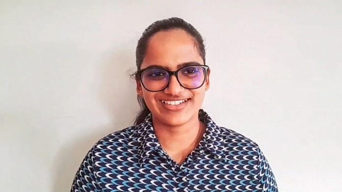

T.T. Mutukutti
Student 1 | w2181482
Template, Home page, Gallery
Focused on the shared template, navbar, reusable CSS structure, home page card layout, and interactive gallery implementation.
Use the keyboard or mouse to open each team member card and view their contribution.
Student 1 | w2181482
Template, Home page, Gallery
Focused on the shared template, navbar, reusable CSS structure, home page card layout, and interactive gallery implementation.

Student 2 | w2181476
Splash screen, AIS
Worked on splash screen timing, intro presentation, JavaScript countdown, and action scoring logic for the simulator.
Student 3 | w2181487
Feedback, Team
Developed the feedback structure, programme cards, review section, form validation, and accessible team interaction.
Student 4 | w2181458
Profile, Sitemap
Implemented the prompt-based profile builder, progress logic, and responsive SVG sitemap of the full website.